L’Asie est un immense continent qui s’étend sur 43,8 millions de km².
Un continent qui rassemble des pays aussi différents que la Russie, Bruneï, la Chine ou l’Indonésie et encore l’Ouzbékistan les déserts du Namib et du Kalahari
Il compte 50 pays
A
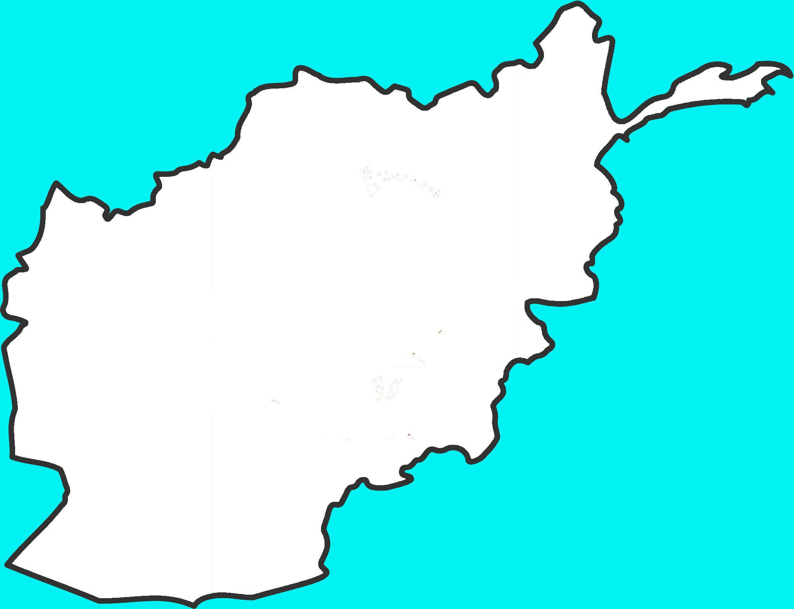Hymne national:
Hymne national
Hymne national:
Le salut royal
Hymne national:
Notre Patrie
Hymne national:
Marche azerbaïdjanaise
B
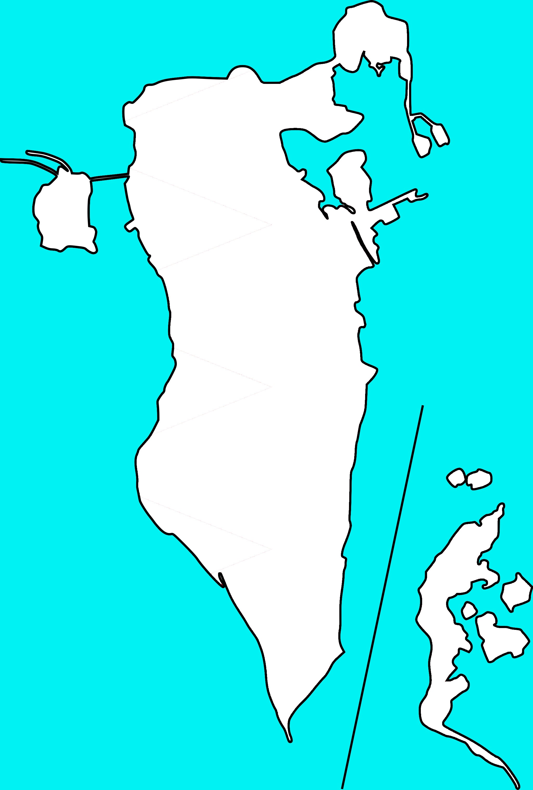Hymne national:
Notre Bahreïn
Hymne national:
Mon Bengale doré
Hymne national:
Terre du dragon tonnerre
Hymne national:
Nous aimerons la Birmanie
Hymne national:
Dieu bénisse le Sultan
C
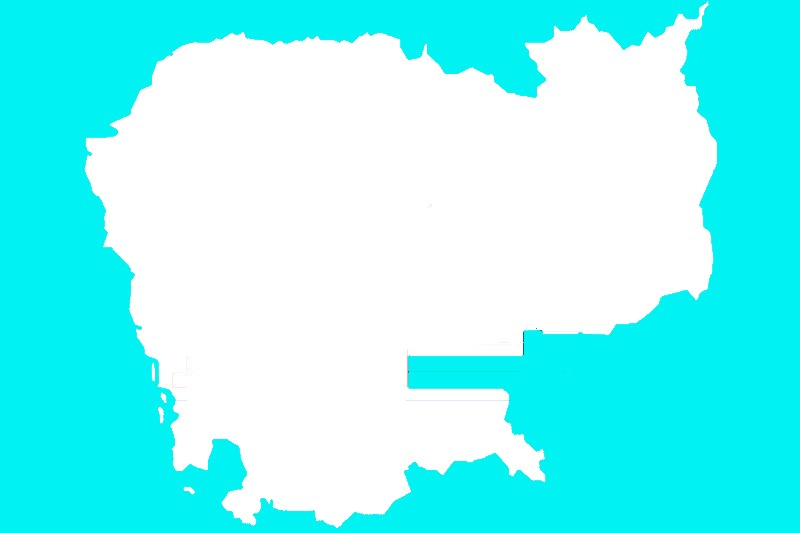Hymne national:
Majestueux Royaume
Hymne national:
La Marche des Volontaires
Hymne national:
Chant patriotique
Hymne national:
Chanson de l'amour pour le Pays
E
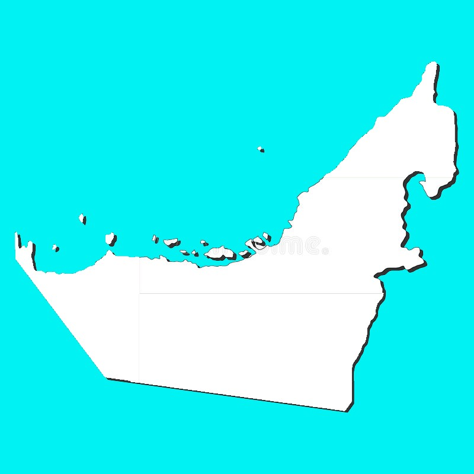Hymne national:
Vive ma patrie
G
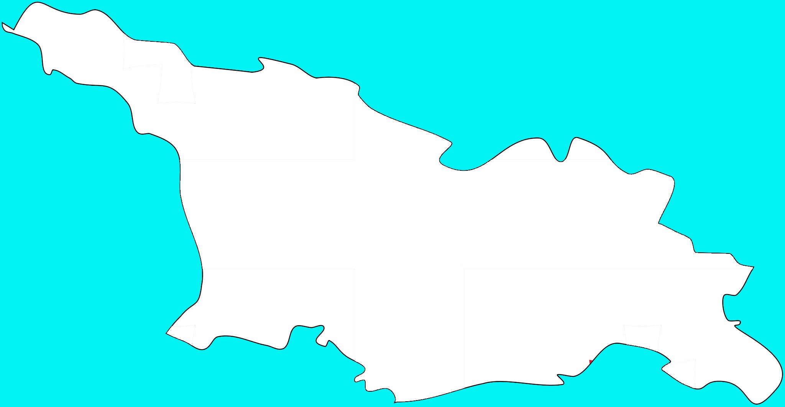Hymne national:
Liberté
I
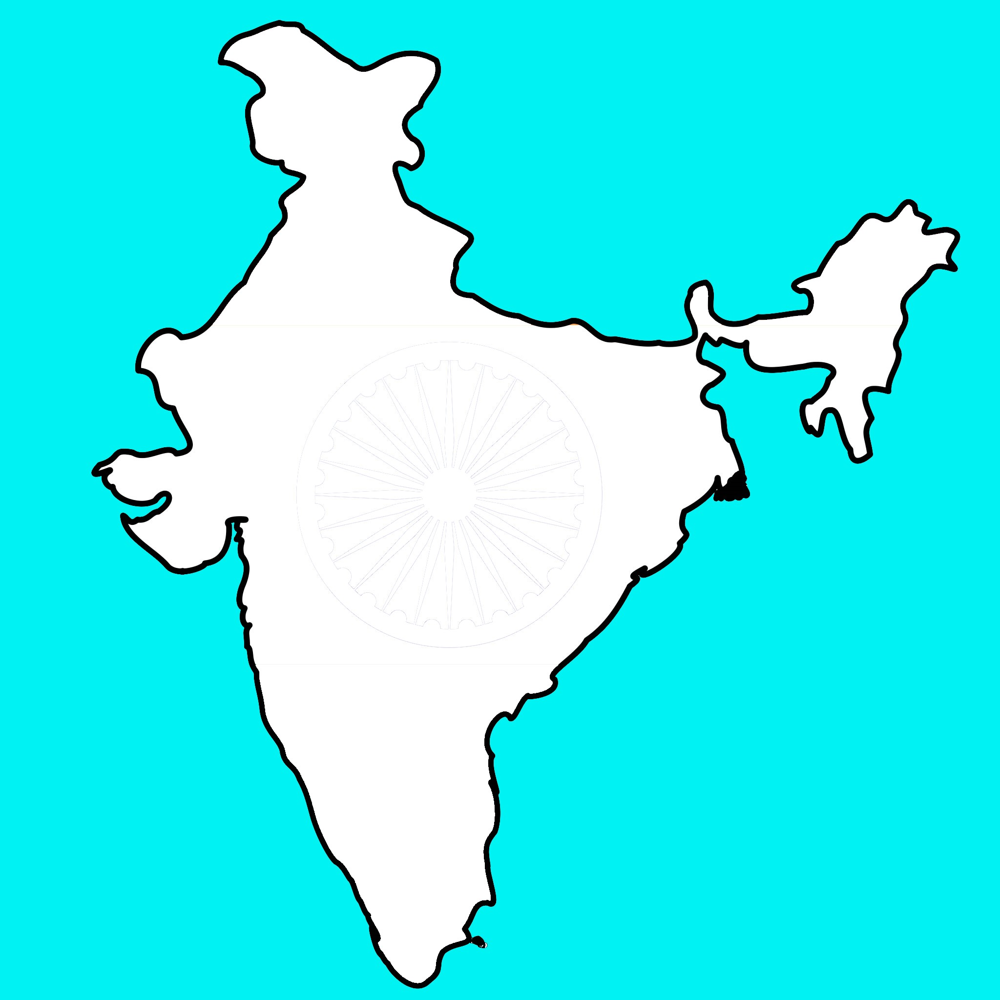Hymne national:
Tu es le souverain de toutes les âmes
Hymne national:
Grande Indonésie
Hymne national:
Ma patrie
Hymne national:
Hymne de la république islamique
Hymne national:
L'Espoir
J
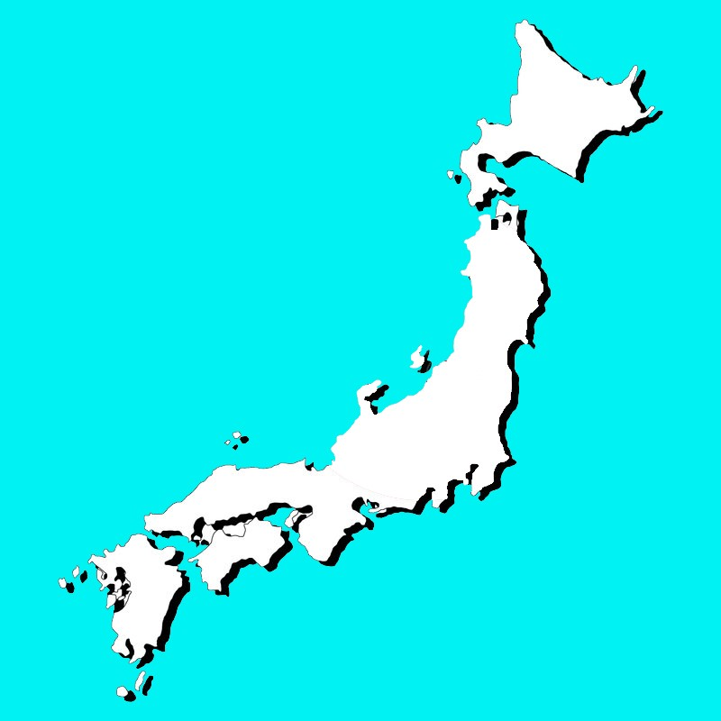Hymne national:
Votre règne
Hymne national:
Longue vie au roi !
K
Hymne national:
Mon Kazakhstan
Hymne national:
Hymne national de la République kirghize
Hymne national:
Hymne national
L
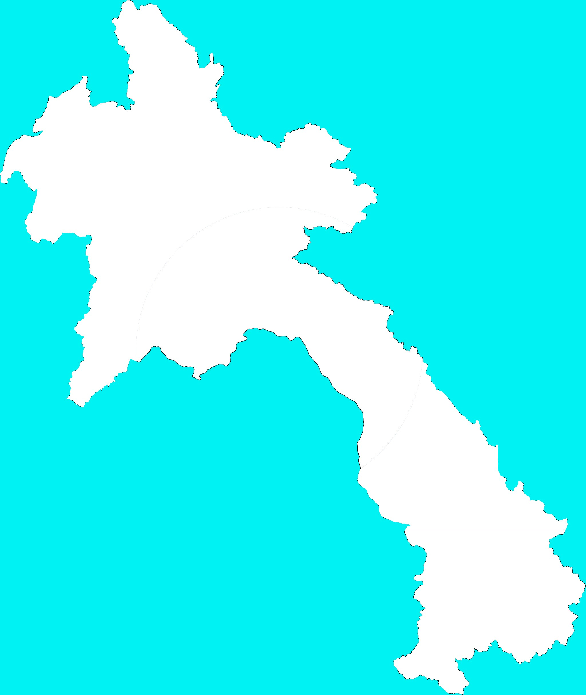Hymne national:
Hymne aux gens du Laos
Hymne national:
Tous ! Pour notre pays, notre drapeau et notre gloire
M
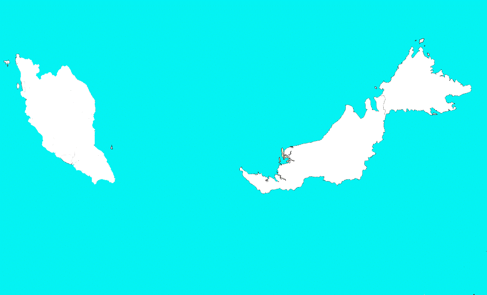Hymne national:
Mon Pays
Hymne national:
Dans l'Unité nationale, nous saluons notre nation
Hymne national:
Hymne mongol
N
Hymne national:
Les cent fleurs
O
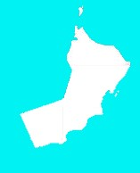Hymne national:
Hymne du sultan
Hymne national:
Hymne national de l'Ouzbékistan
P
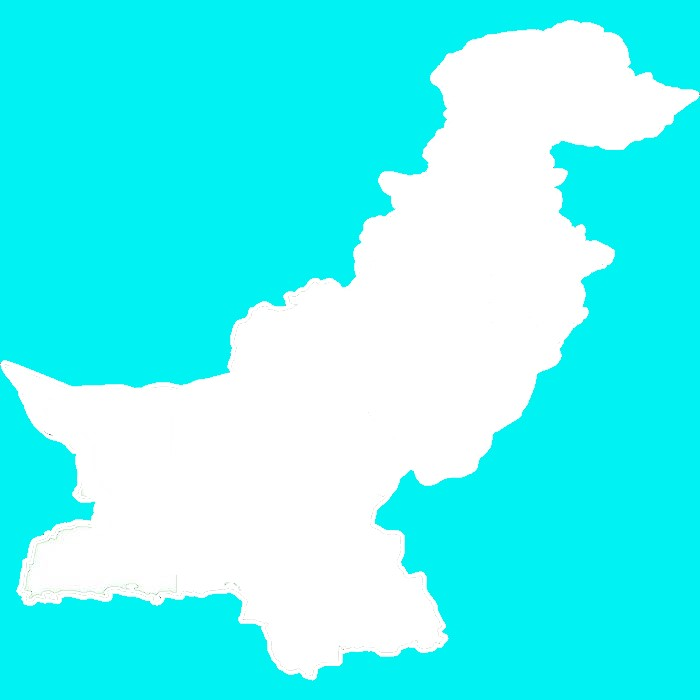Hymne national:
Honorée soit cette terre sacrée
Hymne national:
Ma patrie, ma patrie
Hymne national:
Pays choisi
Q
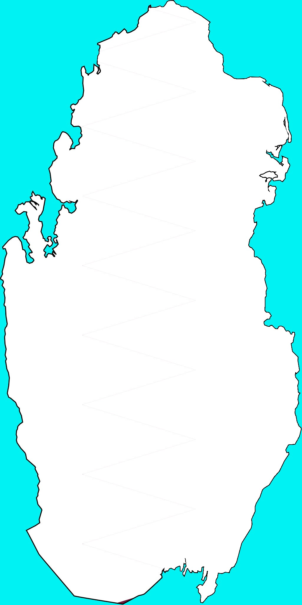Hymne national:
Vive l'Émir !
R

Hymne national:
Hymne national de la Russie
S
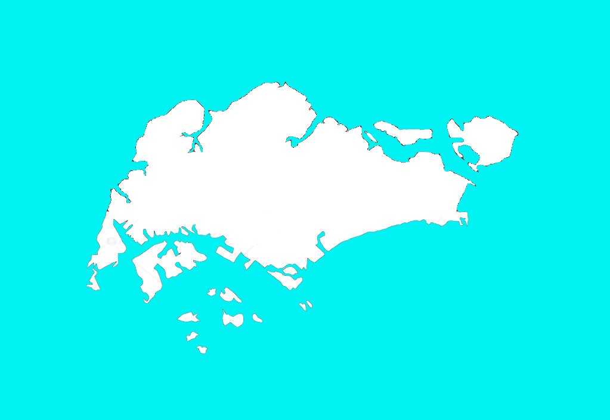Hymne national:
Puisse Singapour progresser
Hymne national:
Mère Sri Lanka
Hymne national:
Gardiens de la Patrie
T
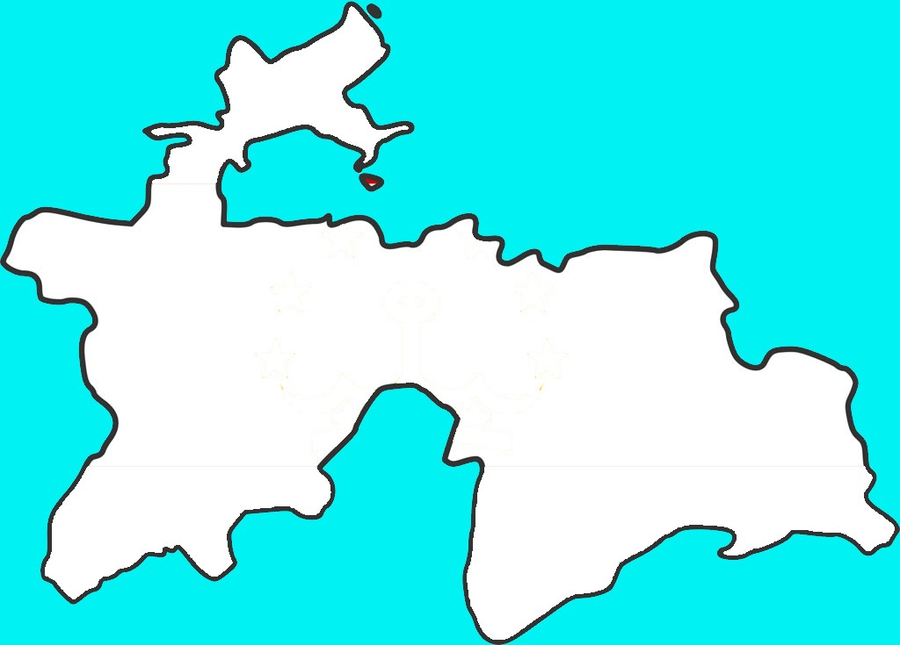Hymne national:
Hymne national
Hymne national:
Les Trois principes du peuple
Hymne national:
Hymne national
Hymne national:
Patrie
Hymne national:
Hymne national turkmène
Hymne national:
La Marche de l'Indépendance
V
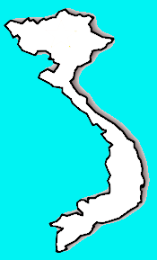Hymne national:
Les troupes avancent
Y
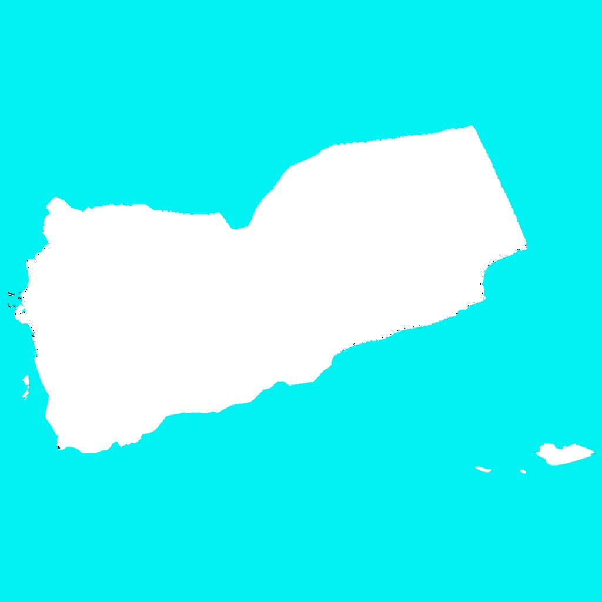Hymne national:
République unie